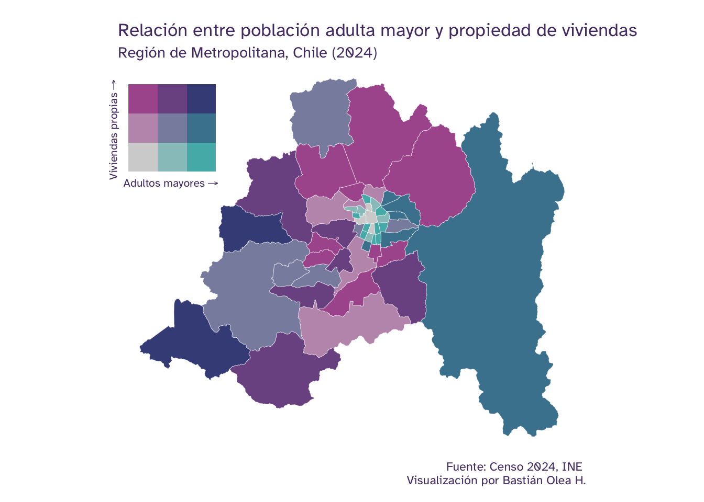
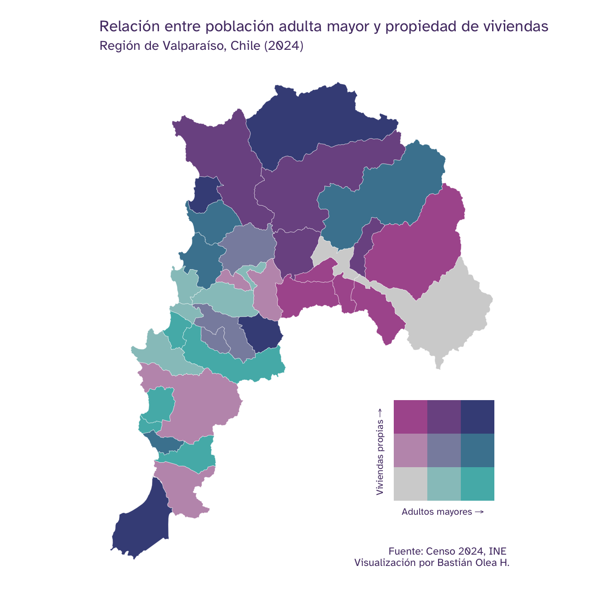
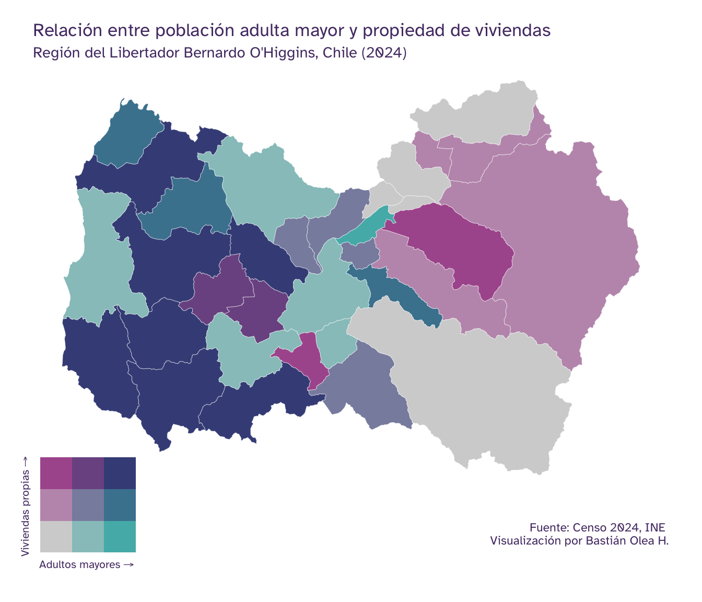
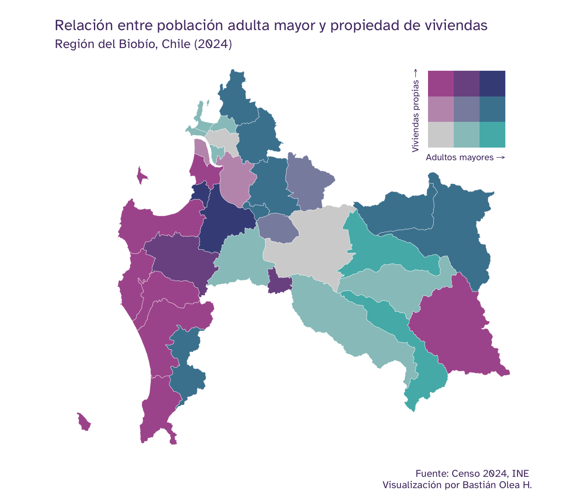

Mapas bivariados de adultos mayores en relación a viviendas propias en las comunas de Chile
Exploración visual de correlación de datos territoriales
24/7/2026
¿Dónde viven más adultos mayores, y dónde existen más viviendas propias? ¿En qué comunas conviven altos porcentajes de ambas características? Para responder este tipo de interrogantes, que han emergido a propósito del debate sobre la exención del pago de contribuciones en Chile, se pueden usar mapas bivariados. Los mapas bivariados, como su nombre indica, representan dos variables simultáneamente por medio de una paleta que mezcla dos tonos de colores, permitiendo explorar visualmente correlaciones o co-currencias de fenómenos territoriales.
En esta publicación usaremos esta herramienta para explorar cómo se distribuyen geográficamente el envejecimiento poblacional y la propiedad de viviendas en distintas regiones de Chile, según datos del Censo de Población y Vivienda 2024.
Tutorial: Cómo crear mapas bivariados

Preparar los datos
Para este ejemplo necesitamos dos indicadores por comuna: el porcentaje de adultos mayores y el de viviendas propias, ambos del Censo 2024.
Primero cargamos el Censo como una base de datos y también el diccionario de datos del Censo:
library(dplyr)
library(readxl)
library(arrow)
# cargar diccionario de comunas
comunas <- readxl::read_xlsx("diccionario_variables_censo2024.xlsx",
sheet = "codigos_territoriales") |>
select(comuna = 1, nombre_comuna = 3) |>
filter(comuna > 999)
# cargar bases del Censo como base de datos (Arrow)
personas <- open_dataset("personas_censo2024.parquet")
hogares <- open_dataset("hogares_censo2024.parquet")
Luego procesamos los datos: primero seleccionamos las variables de personas y anexamos las variables de hogares correspondientes:
# cruzar personas y hogares, contar y traer a memoria
personas_hogares <- personas |>
select(id_vivienda, id_hogar, comuna, sexo, edad_quinquenal) |>
# agregar datos de nivel viviebda
left_join(
hogares |> select(id_vivienda, id_hogar, comuna, p12_tenencia_viv),
join_by(id_vivienda, id_hogar, comuna)
) |>
# contar casos según variables de interés
group_by(comuna, sexo, edad_quinquenal, p12_tenencia_viv) |>
summarize(n = n()) |>
ungroup() |>
# calcular desde base de datos
collect()
Luego recodificamos las variables para que sean legibles, y creamos las variables que necesitamos, particularmente la variable de adultos mayores que distingue las edades de hombres y mujeres:
# recodificar variables y crear indicadores
conteo_recod <- personas_hogares |>
# recodificar variables numéricas a partir del diccionario de datos
mutate(
sexo = recode_values(sexo, 1 ~ "Hombre", 2 ~ "Mujer"),
p12_tenencia_viv = recode_values(
p12_tenencia_viv,
1 ~ "Propia pagada", 2 ~ "Propia pagándose",
3 ~ "Arrendada con contrato", 4 ~ "Arrendada sin contrato",
5 ~ "Cedida por trabajo o servicio", 6 ~ "Cedida por familiar u otro",
7 ~ "Usufructo: solo uso y goce", 8 ~ "Ocupada de hecho",
9 ~ "Propiedad en sucesión o litigio"
)) |>
# crear indicadores nuevos a partir de variables censales
mutate(
propiedad = if_else(
p12_tenencia_viv %in% c("Propia pagada", "Propia pagándose"),
"Propia", "No propia"
),
mayor = case_when(
sexo == "Hombre" & edad_quinquenal >= 65 ~ "Adulto mayor",
sexo == "Mujer" & edad_quinquenal >= 60 ~ "Adulto mayor",
.default = "No adulto mayor"
)
) |>
# agregar nombres de comunas
left_join(comunas, by = "comuna")
Ahora calculamos por comuna los porcentajes de adultos mayores, porcentajes de viviendas propias, y unimos ambos resultados en una tabla:
# calcular porcentaje de adultos mayores por comuna
mayor_p <- conteo_recod |>
group_by(nombre_comuna, comuna) |>
count(mayor, wt = n) |>
mutate(p = n / sum(n)) |>
filter(mayor == "Adulto mayor") |>
select(nombre_comuna, comuna, mayor_p = p) |>
ungroup()
# calcular porcentaje de viviendas propias por comuna
propia_p <- conteo_recod |>
group_by(nombre_comuna, comuna) |>
count(propiedad, wt = n) |>
mutate(p = n / sum(n)) |>
filter(propiedad == "Propia") |>
select(comuna, propia_p = p) |>
ungroup()
# unir ambos indicadores
datos_censo <- left_join(
mayor_p, propia_p,
join_by(nombre_comuna, comuna)
)
El resultado es una tabla por comunas con los porcentajes de incidencia cada fenómeno:
datos_censo
# A tibble: 345 × 4
nombre_comuna comuna mayor_p propia_p
<chr> <dbl> <dbl> <dbl>
1 Algarrobo 5602 0.292 0.641
2 Alhué 13502 0.161 0.693
3 Alto Biobío 8314 0.111 0.873
4 Alto Hospicio 1107 0.0725 0.564
5 Alto del Carmen 3302 0.243 0.676
6 Ancud 10202 0.197 0.728
7 Andacollo 4103 0.202 0.772
8 Angol 9201 0.189 0.713
9 Antofagasta 2101 0.122 0.504
10 Antuco 8302 0.238 0.746
# ℹ 335 more rows
Preparar los mapas
Con los indicadores ya calculados, obtenemos el mapa de comunas y lo unimos con nuestros datos censales:
library(ggplot2)
library(sf)
library(chilemapas)
library(biscale)
library(patchwork)
# obtener mapa de comunas
mapa_comunas <- chilemapas::mapa_comunas |>
mutate(codigo_comuna = as.numeric(codigo_comuna)) |>
rename(comuna = codigo_comuna)
# unir datos con el mapa
mapa_censo <- datos_censo |>
left_join(mapa_comunas, by = "comuna")
Ahora especificamos la apariencia de los mapas venideros definiendo el tema:
library(ggplot2)
theme_set(
theme_void(
base_family = "Atkinson Hyperlegible",
paper = "#EAD1FA",
ink = "#543A73",
accent = "#9069C0"
) +
# margen de mapas
theme(plot.margin = unit(c(2, 2, 2, 2), "mm")) +
# fondo transparente (paper de theme_void deja fondo opaco)
theme(plot.background = element_rect(fill = "transparent",
color = "transparent")) +
theme(panel.grid.major = element_blank())
)
Siguiendo el tutorial de mapas bivariados, sabemos que la leyenda de éstos requiere de una paleta de colores, una cantidad de dimensiones, y las etiquetas de las variables a usar.
paleta <- "DkBlue2"
dimensiones <- 3
leyenda_bivariada <- bi_legend(pal = paleta,
dim = dimensiones,
xlab = "Adultos mayores",
ylab = "Viviendas propias",
size = 8) +
theme(plot.background = element_blank(),
panel.background = element_blank(),
panel.grid.major = element_blank(),
axis.title = element_text(family = "Atkinson Hyperlegible",
color = "#543A73"))
Esta misma leyenda nos servirá para todos los mapas que hagamos.
Mapas bivariados
Ahora podemos pasar a visualizar los mapas! Presentaremos algunas regiones de Chile como ejemplo, pero puedes usar el mismo código para generar visualizaciones de las regiones que te interesen.
Región Metropolitana
library(patchwork)
mapa_rm <- mapa_censo |>
filter(codigo_region == "13") |>
# clasificar variables
bi_class(x = mayor_p,
y = propia_p,
style = "quantile",
dim = dimensiones) |>
st_as_sf() |>
# visualizar mapa
ggplot() +
aes(fill = bi_class) +
geom_sf(show.legend = FALSE, linewidth = 0.1, color = "white") +
# geom_sf_label(aes(label = nombre_comuna), size = 2, show.legend = F) +
bi_scale_fill(pal = paleta, dim = dimensiones) +
labs(subtitle = "Región de Metropolitana, Chile (2024)",
title = "Relación entre población adulta mayor y propiedad de viviendas",
caption = "Fuente: Censo 2024, INE \nVisualización por Bastián Olea H.")
mapa_rm +
inset_element(leyenda_bivariada,
left = -0.1, bottom = 0.65,
right = 0.3, top = 1)

Podemos ver que el centro de Santiago presenta menos porcentaje de viviendas propias (color blanco), como en Estación Central y Santiago, y en sus márgenes un mayor porcentaje de adultos mayores (color turquesa) en comunas como Providencia, San Joaquín y Conchalí. En las comunas del norte de la región, como Lampa, Colina, Quilicura y Lo Barnechea vemos los mayores porcentajes de viviendas propias (color fucsia). En las comunas del sector oriente de Santiago, como La Florida, La Reina, Las Condes y Vitacura vemos mayor proporción de adultos mayores mezclada con un porcentaje mayor de viviendas propias. Solamente en las comunas de la zona poniente de la región, como San Pedro y María Pinto, vemos la combinación de alto porcentaje de adultos mayores y alto porcentaje de viviendas propias (azul oscuro).
Región de Valparaíso
mapa_valpo <- mapa_censo |>
filter(codigo_region == "05") |>
# clasificar variables
bi_class(x = mayor_p,
y = propia_p,
style = "quantile",
dim = dimensiones) |>
st_as_sf() |>
# visualizar mapa
ggplot() +
aes(fill = bi_class) +
geom_sf(show.legend = FALSE, linewidth = 0.1, color = "white") +
# geom_sf_label(aes(label = nombre_comuna), size = 2, show.legend = F) +
bi_scale_fill(pal = paleta, dim = dimensiones) +
# excluir islas
coord_sf(xlim = c(-71.8, -70),
ylim = c(-32, -34)) +
labs(subtitle = "Región de Valparaíso, Chile (2024)",
title = "Relación entre población adulta mayor y propiedad de viviendas",
caption = "Fuente: Censo 2024, INE \nVisualización por Bastián Olea H.") +
# levantar el texto inferior
theme(plot.caption = element_text(margin = margin(t = -40)))
mapa_valpo +
inset_element(leyenda_bivariada,
left = 0.55, bottom = 0.13,
right = 1.1, top = 0.4)

En la región de Valparaíso, vemos que las comunas de Papudo, Petorca, Santo Domingo y Olmué presentan una combinación de alto porcentaje de viviendas propias y de adultos mayores en simultáneo. En Zapallar, Puchuncaví y El Tabo vemos alto porcentaje de adultos mayores, y porcentaje medio de viviendas propias, mintras que en comunas del interior, como Panquehue, San Esteban y Calle Larga vemos alto porcentaje de viviendas propias con porcentaje medio de adultos mayores. Finalmente, en comunas del litoral como Algarrobo, El Quisco, Cartagena y Viña del Mar vemos alto porcentaje de envejecimiento con bajo porcentaje de propiedad, lo que puede tener relación a la actividad turística y la población flotante.
Región de O’Higgins
# Clasificar región 6
mapa_ohiggins <- mapa_censo |>
filter(codigo_region == "06") |>
# clasificar variables
bi_class(x = mayor_p,
y = propia_p,
style = "quantile",
dim = dimensiones) |>
st_as_sf() |>
# visualizar mapa
ggplot() +
aes(fill = bi_class) +
geom_sf(show.legend = FALSE, linewidth = 0.1, color = "white") +
# geom_sf_label(aes(label = nombre_comuna), size = 2, show.legend = F) +
bi_scale_fill(pal = paleta, dim = dimensiones) +
# agregar espacios abajo para ajustar la leyenda
theme(plot.margin = unit(c(2, 2, 12, 2), "mm"),
plot.caption = element_text(margin = margin(t = 20))) +
labs(subtitle = "Región del Libertador Bernardo O'Higgins, Chile (2024)",
title = "Relación entre población adulta mayor y propiedad de viviendas",
caption = "Fuente: Censo 2024, INE \nVisualización por Bastián Olea H.")
mapa_ohiggins +
inset_element(leyenda_bivariada,
left = -0.05, bottom = -0.2,
right = 0.2, top = 0.15)

En la región de O’Higgins vemos muchas más comunas de alto envejecimiento y alta propiedad de viviendas, sobre todo en el sector de Colchagua y Cardenal Caro, en comunas como Litueche, Paredones, Lolol, Chépica, Marchihue, Pumanque y Pichidegua. En contraposición, en la provincia del Cachapoal se divisa una tendencia hacia menor porcentaje de adultos mayores y porcentaje medianamente alto de viviendas propias, sobre todo en counas como Requínoa, Rengo, Machalí, Graneros y Codegua. En Requínoa vemos un alto porcentaje de viviendas propias con bajo nivel de envejecimiento. En O’Higgins vemos envejecimiento en ciertos territorios y rejuvenecimiento en otros, probablemente relacionado a tendencias laborales (agricultura y minería).
Región del Biobío
mapa_biobio <- mapa_censo |>
filter(codigo_region == "08") |>
# clasificar variables
bi_class(x = mayor_p,
y = propia_p,
style = "quantile",
dim = dimensiones) |>
st_as_sf() |>
# visualizar mapa
ggplot() +
aes(fill = bi_class) +
geom_sf(show.legend = FALSE, linewidth = 0.1, color = "white") +
# geom_sf_label(aes(label = nombre_comuna), size = 2, show.legend = F) +
bi_scale_fill(pal = paleta, dim = dimensiones) +
labs(subtitle = "Región del Biobío, Chile (2024)",
title = "Relación entre población adulta mayor y propiedad de viviendas",
caption = "Fuente: Censo 2024, INE \nVisualización por Bastián Olea H.")
mapa_biobio +
inset_element(leyenda_bivariada,
left = 0.7, bottom = 0.71,
right = 1, top = 1.)

En toda la zona de la costa del Biobío vemos comunas con alto porcentaje de propiedad de las viviendas pero bajo envejecimiento de la población: Coronel, Arauco, Lebu, Los Álamos, Cañete y Tirúa. Solamente en las comunas de Lota y Santa Juana vemos comunas con alto envejecimiento y alto porcentaje de propiedad. En la zona norte de la región vemos una mayor tendencia al medio y alto porcentaje de adultos mayores, con niveles bajos o medios de propiedad de vivienda. Hacia el interior, en comunas como Quilleco y Quilaco y alrededores nuevamente vemos alto envejecimiento con poco porcentaje de propiedad.
Esto fue una breve demostración de un análisis exploratorio visual de datos territoriales usando R y datos del Censo!
Publicaciones relacionadas
Publicaciones relacionadas

Publicaciones relacionadas

Publicaciones sobre mapas